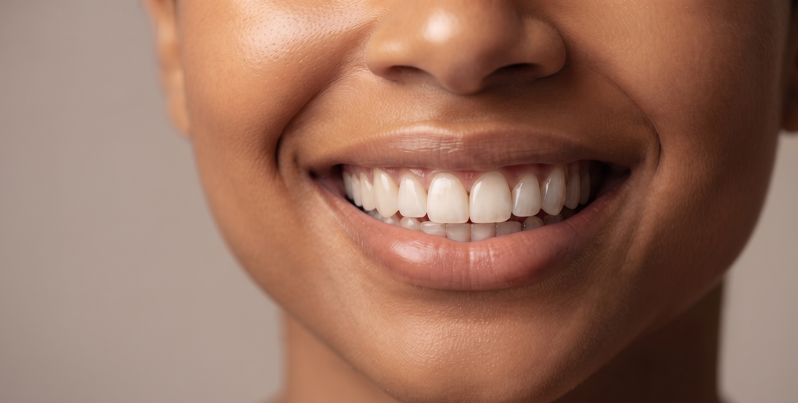
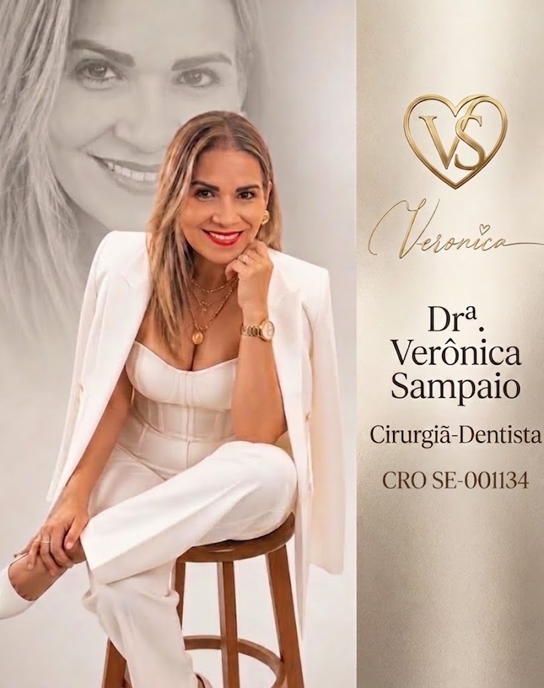
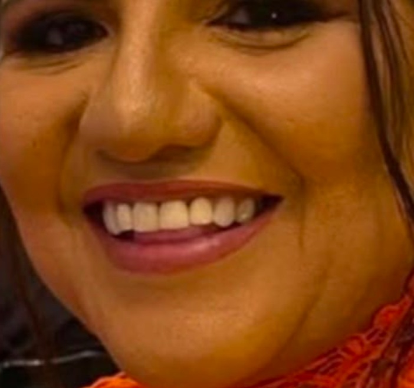
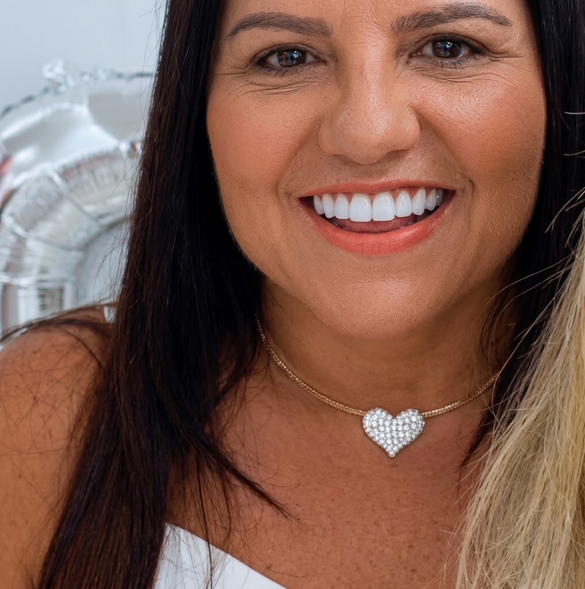
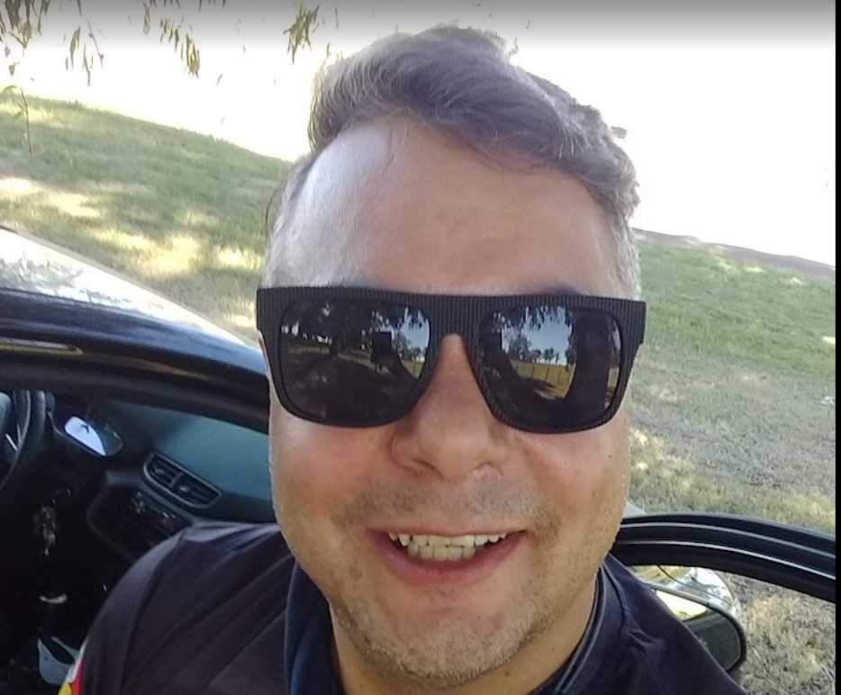

Aparência natural
Facetas planejadas para um resultado harmônico e natural.
Odontologia Estética · Aracaju
Um sorriso mais harmônico, natural e confiante, planejado de acordo com as características do seu rosto.
Aracaju – Sergipe

Você se identifica?
Cada sorriso possui características únicas. Por isso, o planejamento deve considerar o formato dos dentes, o rosto, a proporção e o resultado desejado por cada paciente.
Quero saber maisO tratamento
As facetas em resina são uma alternativa estética utilizada para modificar formato, proporção e aparência dos dentes, proporcionando um sorriso mais equilibrado e natural.
Pense na faceta como um "ajuste fino" do sorriso: um cuidado estético feito para valorizar o que você já tem, com naturalidade.
Benefícios
Cada detalhe é planejado para valorizar a naturalidade e a harmonia do seu rosto.
Facetas planejadas para um resultado harmônico e natural.
Proporções equilibradas com as características do seu rosto.
Formato e proporção ajustados às suas características.
Cada sorriso é estudado de forma exclusiva.
Conforto e segurança ao sorrir no dia a dia.
Acompanhamento próximo e atenção em cada etapa.

A profissional
A Dra. Verônica Sampaio atua na área de estética odontológica, buscando resultados que respeitem a individualidade de cada paciente e valorizem a naturalidade do sorriso.
Formação, especializações e certificações serão incluídas aqui quando autorizadas.
Agendar avaliaçãoComo funciona
Conhecemos suas necessidades, expectativas e características do seu sorriso.
Definimos a melhor estratégia estética para o seu caso.
Realizamos o tratamento de forma personalizada.
Você acompanha a transformação e recebe orientações para cuidar do seu sorriso.
Antes e depois
Espaço reservado para registros autorizados de casos clínicos.



Os resultados podem variar de acordo com as características individuais de cada paciente.
Depoimentos
Espaço reservado para o depoimento real de uma paciente. Substitua este texto por um relato autorizado e com nome verdadeiro.
Espaço reservado para o depoimento real de uma paciente. Substitua este texto por um relato autorizado e com nome verdadeiro.
Espaço reservado para o depoimento real de uma paciente. Substitua este texto por um relato autorizado e com nome verdadeiro.
Dúvidas frequentes
Cada caso é único. A indicação depende de uma avaliação clínica, considerando a saúde bucal e as características do sorriso de cada paciente. Durante a avaliação, a Dra. Verônica poderá orientar sobre a melhor opção para o seu caso.
A durabilidade varia de acordo com os cuidados de cada paciente, hábitos e acompanhamento. Com manutenção adequada e higiene bucal, o material pode se manter por um bom tempo. O acompanhamento periódico é importante para avaliar a necessidade de manutenção.
De modo geral, a técnica busca preservar ao máximo a estrutura dental. A necessidade de desgaste depende do caso e deve ser avaliada individualmente pelo profissional.
O procedimento é realizado com anestesia quando necessário para garantir conforto. A sensibilidade e o desconforto podem variar de pessoa para pessoa e são orientados durante o acompanhamento.
As facetas em resina são confeccionadas diretamente sobre o dente com material resinoso, enquanto as lentes de porcelana são confeccionadas em laboratório e cimentadas sobre o dente. Cada técnica possui indicações próprias, que serão avaliadas no planejamento.
Somente uma avaliação clínica pode indicar a melhor alternativa. O planejamento considera formato dos dentes, proporção facial, saúde bucal e expectativas do paciente.
Sim. A avaliação é o primeiro passo para conhecer o seu caso, esclarecer dúvidas e definir o melhor plano de tratamento.
Agende sua avaliação
Agende uma avaliação e converse com a Dra. Verônica Sampaio sobre as possibilidades para o seu caso.
AGENDAR AVALIAÇÃO PELO WHATSAPPAracaju – Sergipe